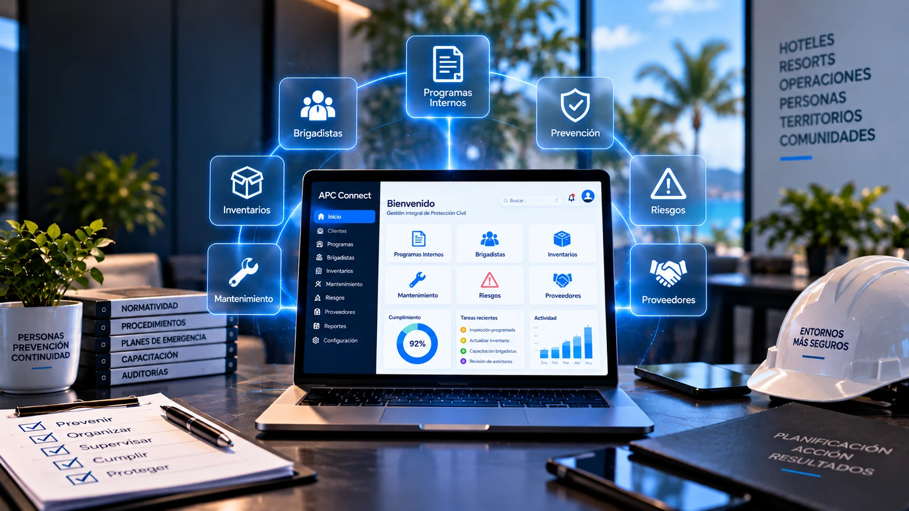

Digitalización
Convertir una operación basada en información y procesos en una experiencia digital.
Exploramos necesidades reales y las transformamos en experiencias, herramientas y sistemas digitales.
* Vista conceptual — no es una captura real de producto.
Antes de construir, entendemos qué necesita funcionar mejor.
Proyecto destacado
APC Connect nace como una plataforma para transformar la gestión de Programas Internos de Protección Civil en una experiencia digital estructurada. El objetivo conceptual es pasar de información y procesos dispersos a una plataforma donde diferentes usuarios puedan trabajar con información organizada.

* Vista conceptual de APC Connect (en desarrollo). No es una captura real del producto: los módulos y cifras que aparecen son ilustrativos.
Proyecto
APC Connect
Qué es
Plataforma digital para la gestión de Programas Internos de Protección Civil.
Estado
En desarrollo
El proyecto parte de una necesidad: la gestión de un Programa Interno puede involucrar información dispersa en distintas áreas.
El reto es organizar esa información y convertirla en una experiencia digital que pueda consultarse y gestionarse.
APC Connect se plantea como una plataforma modular.
La plataforma también contempla usuarios, roles, permisos y documentos como parte de su estructura.
El proyecto no busca simplemente convertir un PDF en una página web. La idea es transformar la información en una experiencia digital donde pueda consultarse, organizarse, actualizarse y gestionarse.
Vista conceptual
* Composición conceptual, no una pantalla real del producto.
Estructura conceptual, no un diagrama técnico de implementación.
APC Connect
Módulos
Convertir una operación basada en información y procesos en una experiencia digital.
Organizar información, módulos y usuarios alrededor de una lógica común.
Diseñar una interfaz para diferentes necesidades y perfiles.
Pensar la solución como una plataforma que puede evolucionar, no como una garantía técnica.
Proyectos como APC Connect pueden comenzar como una necesidad de digitalización y, más adelante, evolucionar incorporando automatización o inteligencia artificial cuando tenga sentido. Esto no significa que el proyecto utilice IA hoy.
Por eso no partimos de una solución prefabricada. Partimos de entender qué necesita funcionar mejor.
Cuéntanos qué necesitas mejorar, digitalizar o construir.
¿Prefieres correo? Ver otras formas de contacto